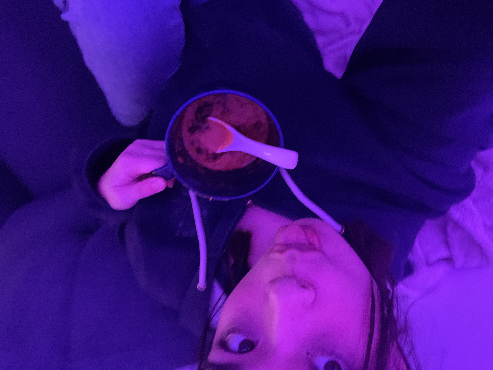
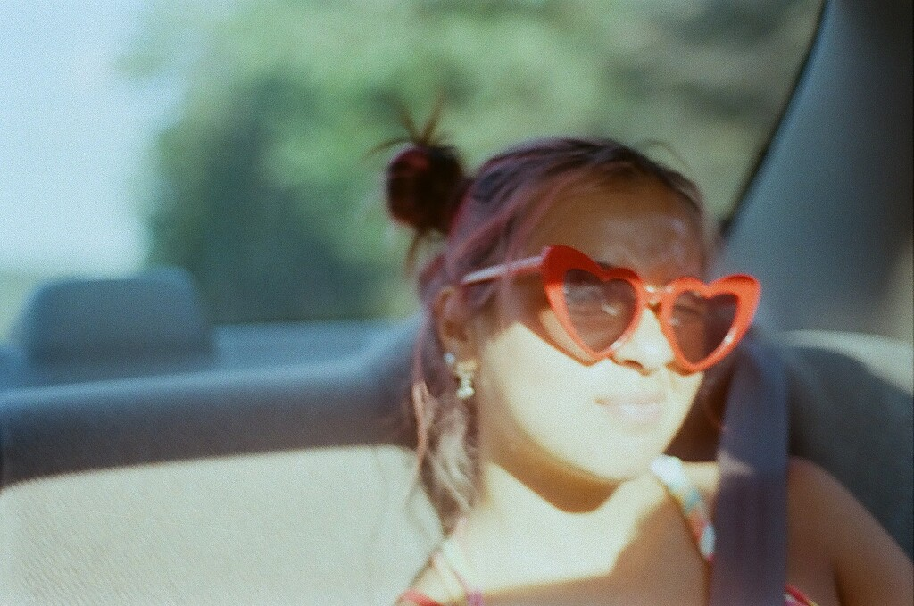
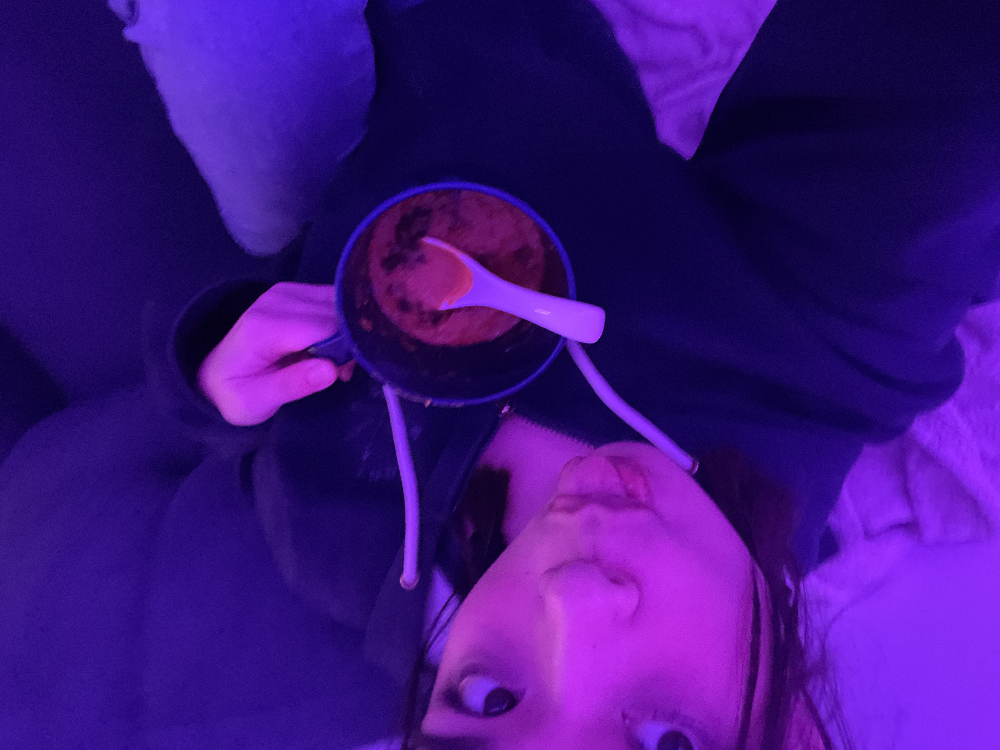
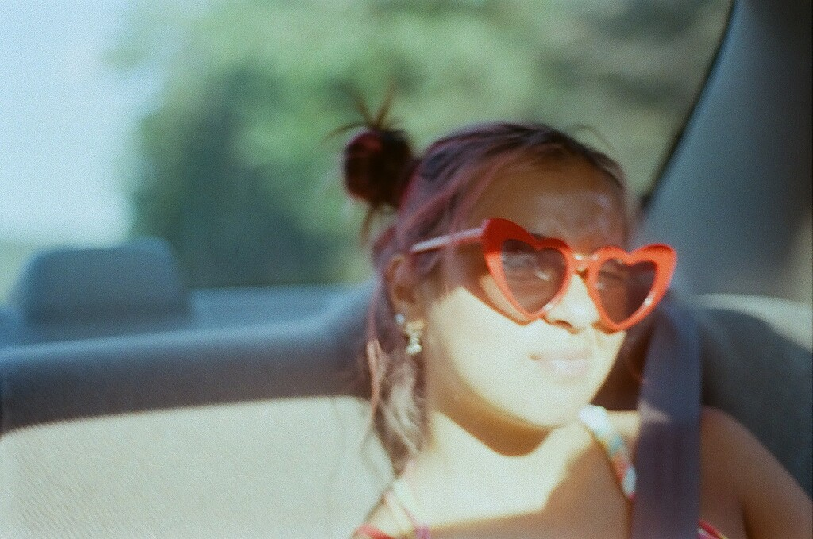

Hi, my name is Shiaowei
I am 19 years old, and I'm from Connecticut.
All I ever wanted since I gained consciousness as a baby was to travel the world. I think that there are a lot of “made-up” things in this world
(money, the job market, politics, etc) and although they are weaved into all parts of modern life, I do not find much importance and meaning in all of it.
This planet and its people is what I consider to be “real” so I want to see as much of it as I can, while meeting people from communities everywhere.
This is my blog that documents a few of my memories. enjoy!